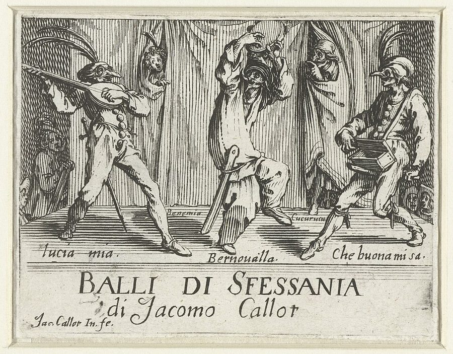
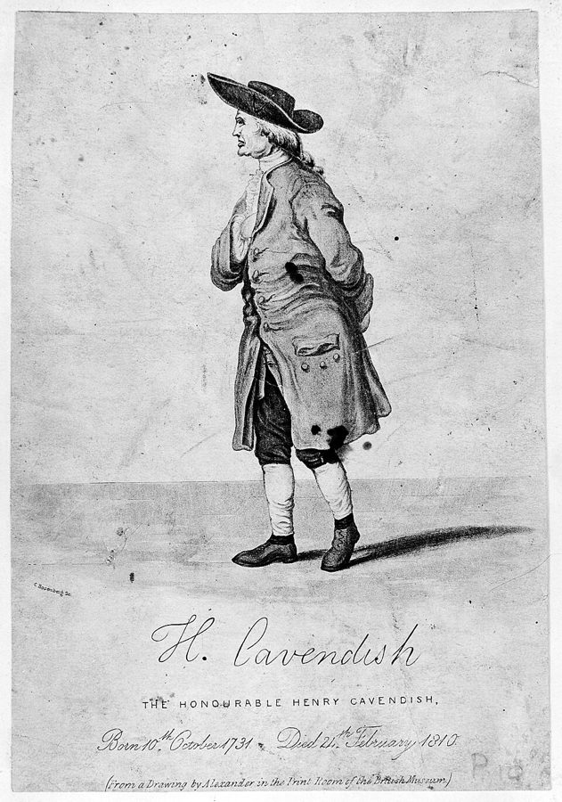
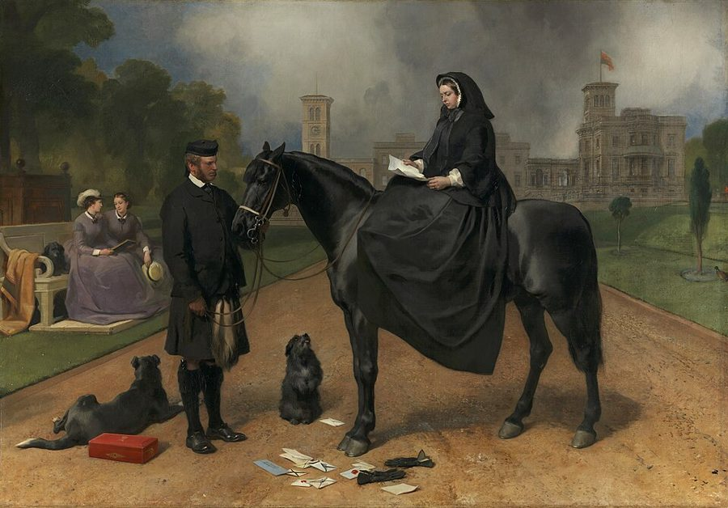
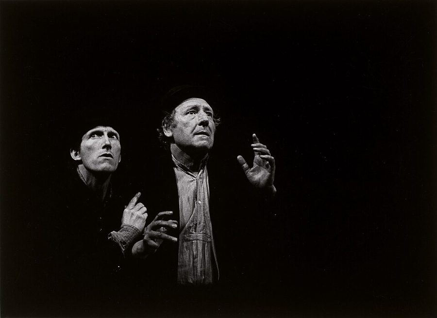

elevate the status of the master
… primary function is to elevate the status of the master …
译本：「仆人的主要职责是抬高主人的姿态」
仆人头一件差事，是把主人的地位抬上去
这是作者给「仆人」下的定义，紧接在「你可以替人干活而不当他的仆人」后面：仆人是一种地位关系，不是一份工作。下面不靠墙、不出声，都从这一句推出来。
地位一篇的最后三节，也是最热闹的三节。主人和仆人在台上是西方喜剧最老的一对搭档，作者问：两人的高低明摆着，戏还怎么演、为什么好看？他给出一条关于空间的规则，再端出一串课堂游戏：仆人怎么接主人的刁难、四个人怎么摘帽子、主人一打响指仆人就倒地。最后他把镜头转向剧本，拿《等待戈多》示范怎么读一出戏里的高低。读的时候抓两条线：主仆是一份约定，和这份约定一级一级排下去会变成什么。

上一页（§4–§6）停在空间：作者说地位说到底是领地，空间像液体一样在人与人之间流动，谁占、谁让。这一页接着往下走：§7 一开头就把主仆戏讲成一份关于空间的约定，然后把两个人扩成一条等级链；§8 把差距拉到最大；§9 是全篇的尾声，从课堂回到剧本。§8 的「最大差」正好和 02a 开头那个「只高一点或只低一点」的练习相对。
§7 借来的 Desmond Morris「首领十条」和 §9 最后一句「我们是啄序动物」，都带着 1960 年代通俗动物行为学的口气：从狒狒一路说到总统。后来的研究说，当头的不止一种当法。本站的看法在页末。
两个人的高低已经由身份定死了（主人和仆人），台上还有什么可以一来一往？
读的时候带着这几个问题。不用先找答案，读完回来对照「检查一下理解」。
§7 很长，但走法清楚：先问主仆戏为什么到处都受欢迎，紧接着给出全节的规则，再用大量细节讲仆人该站在哪儿、怎么走动，中间夹着卡文迪什的轶事和一小段主人劝仆人坐下的对白。然后是一串游戏，从两个人的主仆游戏到一个人分饰两角，再把人数加到四个，变成等级链，帽子游戏是高潮。这时他插进莫里斯的十条规则，又回头讲 4 号的处境，最后落到电影里的群戏。§8 很短，先举现实里的例子，再讲一个越玩越狠的游戏和几段反着来的小戏，收在一句关于荒诞派的括号里。§9 他自己说是尾声，不是总结：一段《等待戈多》，加一句给全篇收口的话。
作者落在哪：主仆戏不是「主人高、仆人低」，而是双方约好所有空间都属于主人，在这份约定里高低照样此起彼伏；把主仆一级级排下去就是等级链，差到最大就成了荒诞戏；他认为好剧本就是把人物之间的地位摆出来、再翻过去。
这一页是原书和译本「姿态」一篇的最后三节。粗体是本站给的节名，下面是译本的节号和小标题、这一节在译本电子书中开头的几个字（搜它就能跳过去），再下面是英文原文的开头。每节标了档：「先读」是这本书最精彩、不读就错过的，「有空」好看但跳过不丢线。读完打个勾。
先把这一页用到、作者默认你懂的几个概念讲一遍。讲的是概念本身，作者拿它推出什么，读原书时自己看。
主人和仆人是喜剧里最老的一对：古希腊罗马的喜剧里就有机灵的奴隶，意大利即兴喜剧里有一群仆人角色，后来还有唐璜和他的跟班、《西厢记》里的红娘、英国小说里无所不能的男仆。身份把两人的高低定死了，可好戏常常就在这个「定死了」里面翻花样：仆人比主人聪明，替主人拿主意，甚至骂他、捉弄他。
作者的用法有两点特别。一是他把主仆当成一种可以借来演的关系：不一定真是主人和仆人，怕老婆的丈夫和强势的妻子也行。二是他不从「谁听谁的」去定义，而从空间：谁能随便占地方，谁得把自己收起来（空间是上一页的概念）。
在这一页：§7 整节建在它上面：先给空间规则，再讲仆人的站位，然后是一串主仆游戏；§8、§9 把它推到最大差和《等待戈多》。
pecking order 本来是鸡群里谁啄谁的先后：二十世纪二十年代，挪威学者 Schjelderup-Ebbe 观察鸡群，发现 A 啄 B、B 啄 C，排定以后打架反而少了。后来这个词泛指一个群体里的上下次序。它和 地位不是一回事：地位是两个人此刻一来一往做出来的高低，啄序是一群人相对稳定的排位，地位的往来在它上面发生，有时也在挑战它。
程序员熟悉的例子：任务从总监派给组长、组长派给你，出了事追责也往下走；你这一头往上递的是「为什么延期」和「线上又出了个问题」。每个人主要跟上一级和下一级打交道，越级说话是件大事。
在这一页：§7 中段作者把主仆扩成编了号的等级链，椅子、长气球、摘帽子都是它；§9 最后一句又回到「啄序动物」。
两个人之间的高低，可以差一点点，也可以差到天上地下。差一点点是日常：同事之间、朋友之间，谁也不敢一下压死谁，得一直盯着对方的反应。差到最大是另一种戏：皇帝和太监、明星和替他撑伞的助理，上面的人一皱眉，下面的人就慌了。
和 02a 开头那个「只高一点或只低一点」的练习对着看：一个逼演员细看对方，一个把高低推到夸张。作者两种都教。
在这一页：§8 用它做游戏，再把它反过来（本该高的人演到最低）；§9 说波卓和幸运儿就是这一种。
作者在课上用过、照着就能玩的；个别几张是本站照书里的段落改的，卡里写明了来历。几个人、怎么玩、看什么写在卡片上；「先猜」那一栏是书里的课堂上发生了什么，先自己猜，或者先玩一次，再点开。全书的游戏卡汇总在游戏汇总。
译本：「仆人永远警觉」
作者给的是「今天是您的生日，先生」：认了穿制服，又给出一个新情况。他说正确的回答一眼就认得出，因为主人会愣住片刻，脑子得重新调整。另一个例子：主人问糖呢，仆人答已经放进去了。
译本：「仆人自找麻烦」
从放山羊进了菜园吃掉大黄，到毒死主人的狗，再到浴室里一位「她」的事，主人那件原本要说的事反倒没人提了。作者说这个套路是从莫里哀那里学来的，文学价值也许不高，观众笑得很厉害。
书里的例子有毒死狗和性方面的暗示。和孩子或不熟的人玩，把「罪行」换成打碎花瓶、偷吃蛋糕这类，套路照样好笑。
作者说其实更容易：演员可以掐自己、揍自己、夸自己，挡住剧情的时候少多了。他说人的头脑很容易分成几个人，并提到 Perls 也让人这样分演两个角色。另一个变体：一人配两个角色的声音，另一人只对口型、做动作，反而撑得住更长的戏。
译本：「拿帽子」
人有把帽子扔远、踢开的强烈冲动，那样人群就散了，疯狂的图案也没了。他说演员玩得上头时，身体用得像出色的肢体喜剧演员，彼此默契，一点不拘谨；他见过观众笑到瘫倒。但老师自己没有那股劲头，这个游戏根本教不了。
作者说常常和挨响指之前一模一样，显得毫不变通，因为他们忙着「演」仆人，没去留意主人要什么。起初只能活几秒，很快能活几分钟，主人被捧得飘飘然。在第一轮里，仆人觉得主人太狠，观众倒奇怪：仆人这么笨手笨脚，怎么活了这么久。
书里的说法是仆人「自杀」，在台上倒下就算，没人真的受伤。和不熟的人、或者最近情绪低落的人玩，换成「被开除」「出局」更稳妥。
按在书里出现的顺序排，标题前是节号。只讲到读懂这一页需要的程度。
作者说，剧作家把故事改成戏，常常添一个仆人，喜剧尤其如此。他的第一个例子是希腊人让西勒诺斯（Silenus，酒神身边的老萨提尔）给独眼巨人当奴隶。原书把这出戏记在索福克勒斯名下，其实是欧里庇得斯的萨提尔剧《独眼巨人》（Cyclops）：把《奥德赛》里奥德修斯斗独眼巨人的故事改成闹剧，加进了被巨人奴役的西勒诺斯和一群萨提尔。译本：「索福克勒斯（Sophocles）」照原书写，读者知道就好。第二个例子是莫里哀的《唐璜》（Dom Juan，1665），唐璜身边一直跟着胆小又多嘴的仆人斯加纳雷尔。

作者说「据说」他看见哪个仆人就开除哪个，并想象仆人们像兔子一样四处躲藏的样子。流传的轶事是：他用纸条吩咐管家，女仆被要求别出现在他眼前，还说他为此加修了一道后楼梯。这些多是后人的转述，没有档案可查，当成作者说的那种「极端的例子」看就好。

维多利亚女王 1861 年丧夫，此后很长一段时间深居简出。约翰·布朗原是她在苏格兰巴尔莫勒尔堡的户外仆人，后来成了她身边最亲近的侍从，对她护得很紧，宫廷和王室里很多人看不惯。作者拿这件事说明：主仆两人一起跳出角色，旁人就会大怒。译本的译注把他当成了美国那位废奴者约翰·布朗，见下面「译本勘误」。
意大利即兴喜剧（commedia dell'arte）十六到十八世纪在欧洲各地巡演。戏班没有写好的剧本，只有一张幕表（scenario），写着这一出分几场、每场谁上谁下、发生什么，台词由演员当场编。角色是固定的一套：主人（吝啬的老商人、卖弄学问的博士）和一群仆人，最有名的是阿莱基诺（Arlecchino）。lazzi 是演员练熟了、随时可以塞进戏里的搞笑段子。作者说把好主人坏仆人、坏主人慌仆人几场串起来就能即兴一出长戏，就是幕表的做法；他的剧团 Theatre Machine 状态好的晚上，靠这种结构能演半小时喜剧。
原书把他的名字拼成了 Frederick Pals，译本已改正。Perls 有个出名的做法：让病人把自己心里互相较劲的两个声音分开来演，一个是发号施令、讲「应该」的 top dog（上风狗），一个是找借口、拖拖拉拉的 underdog（下风狗）。作者拿它说明，一个人分饰主仆并不奇怪，头脑本来就容易分成几个人。
作者引的是他 1969 年的《人类动物园》（The Human Zoo）：Morris 认为现代城市里的人，像关在动物园里的动物。书里给「首领」列了十条金规，说从狒狒到总统都适用。十条是 Morris 的，作者借来告诉演 1 号的人该操心什么；这种从动物一步跨到人的写法，是那个年代通俗动物行为学的风格。
§8 开头的三个例子都是真人：Heinrich Harrer（1912–2006）是奥地利登山家，二战时从英属印度的拘留营逃进西藏，在拉萨住了好几年，写了《西藏七年》；乔治六世（1895–1952）是 1936 到 1952 年在位的英国国王。痰盂、电热内衣和电池这些细节，是作者讲的。「荒诞派戏剧」（theatre of the absurd）是剧评家 Martin Esslin 1961 年一本书的书名，他用它把贝克特、尤内斯库等人归成一派，说他们写的是人生的荒诞无意义。作者不喜欢这个标签，有他自己的解释，见「读完」。

《等待戈多》是爱尔兰作家 Samuel Beckett（1906–1989）先用法文写的，1953 年在巴黎首演，1955 年英文版在伦敦上演。两个流浪汉在路边等一个叫戈多的人，戈多始终没来；中途来了波卓，用绳子牵着他的仆人幸运儿。作者节选的是第一幕波卓那一段。Kenneth Tynan（1927–1980）是当时英国最有影响的剧评人，长期给《观察家报》写剧评。作者说泰南拿贝克特的停顿开过玩笑，那篇文章本站没有查到原文。
读译本时值得翻一下原文的地方：双关、行话、口语，和译本传不出的语气。灰色斜体是原文里的一小段，在英文电子书里搜它就能找到；方框里是译本这一句的译法。译错的放在下一节「译本勘误」。
对着译本读这三节时，下面这些地方会把人读歪。方框里是译本的原句，在译本电子书里搜它就能找到；灰色斜体是英文原文那一处。只收意思错了、反了、漏了的，措辞上的出入不收。全书的勘误汇总在译本勘误。
… both partners should keep see-sawing …
译本：「双方应该保持拉锯战」
see-sawing 就是 02a 讲的跷跷板：双方一上一下、此起彼伏。拉锯战在中文里偏重两边相持、反复争夺，读者不容易认出这就是 02a 那条跷跷板原理。这一句是说主仆戏里高低照样要你上我下地来回翻。
… the servant can throttle the master …
译本：「仆人就可以在压制主人的同时不失仆人身份」
throttle 是掐脖子。作者要说的是一个夸张的画面：受过训练的演员，哪怕动手掐住主人，看上去仍然分明是个仆人。「压制」太抽象，这个反差就没了。
… chauffeurs look when their masters are away …
译本：「他们那些“偷懒”的司机是什么样子的」
shifty 是眼神游移、心虚不自在。主人不在，司机们抽烟聊天、把车当自己的，可身在街上又觉得「暴露」，得时时留神：作者说的是这种又放松又提心吊胆的样子。
… made friends with John Brown …
译本：「约翰·布朗（John Brown）：美国政治家」
译注把他当成了美国发动武装起义的废奴者。这里是维多利亚女王的苏格兰仆人约翰·布朗：主仆两人走得太近，宫里的人很不满，正好是作者要说的「一起跳出角色」。
… accepted that the master takes sugar …
译本：「仆人已经接受了主人要他拿糖的命令」
原文：仆人认下了两件事，主人喝咖啡放糖，而且眼下看不见糖，所以答「已经放进去了」。译本写成仆人接了拿糖的命令、自己没看见糖，这个回答为什么巧就看不出来了。
… the action far less …
译本：「这样他“否定”的动作就少多了」
原文是 block：挡住剧情、不让它往下走，是下一篇的核心术语，译本在下一篇作「拒绝」。这里说的是一个人分饰两角时，挡住剧情的时候少多了，不是做「否定的动作」。
… Orders and blame are passed one way …
译本：「命令和指责通过一种秩序传递」
原文：命令和指责沿着等级链往一个方向传，借口和问题往相反的方向传。看下面那段椅子的对白就知道，命令往下走，问题往上报。译本的「一种秩序、另一种秩序」读不出方向。
… which breaks up the group …
译本：「但这会破坏团队」
break up the group 是把聚在一起的人冲散：帽子飞远了，有人得跑去捡，人群就散开了，疯狂的图案也就没了。这是「必须扔在脚边」的理由，不是说会伤了团队和气。
… interact with another pecking order who are …
译本：「或者用另一个等级排序“拿帽子”」
原文：让这一组和另一组同样在摘帽子的等级链碰面、打交道。译本像是换一种排序再玩一遍。后一句的 1 号「得暴跳如雷」，原文还有半句：不这样什么事都办不成。
… inventing problems to pass up the …
译本：「来试图摆脱社会的等级制度」
原文：4 号还得不停地编出问题，往等级链上面递。下一段紧接着说 4 号发现房子着火、敌人来了，就是这些问题。译本说成想摆脱等级制度，意思完全不对。
… Queen Victoria would take her position …
译本：「维多利亚女王只会坐她自己的椅子上」
原文：女王站定了就往下坐，身后必须有椅子（had 是斜体）。笑点在于有人得随时把椅子送到她身后。译本写成她只坐自己的椅子，例子就不成其为「最大差」了。
… because they clump about …
译本：「也有因为他们凑在了一起」
clump about 是脚步沉重、走来走去咚咚响。和前面的「挥胳膊」一样，是仆人出了声、占了空间，所以被主人「杀掉」。
… not primarily a literary art …
译本：「因为他们没能理解戏剧不是一种文学艺术」
原文有 primarily：戏剧主要不是文学艺术，话没说死。下一句 a great production 是一场伟大的演出，不是「作品」：听不懂台上的语言，好演出照样好，这才接得上前面的论点。
… not really a very high-status master …
译本：「波卓并不是一个真正的高姿态大师」
master 是主仆的「主」。作者说波卓作为主人，地位其实算不上高，因为他一直在争；「大师」会让人以为是在评波卓演地位的本事。
… without appearing to falter …
译本：「可是我既然已经站起来了，叫我怎么能坐下呢？」
这一句后面原文还有：怎么坐下才不显得做作、不显得动摇。波卓的难处正在这里，译本只留下了「我该怎么说呢」。
I teach that a master-servant scene is one in which both parties act as if all the space belonged to the master.— §7。本站译：我教给学生的是：主仆戏，就是双方都表现得好像所有的空间都属于主人。
开头是 I teach，这是一条课堂规则，不是社会学定律；紧跟着一个括号里的「约翰斯通法则！」，带着自嘲。关键词是 both：不只是仆人要让，主人也要理所当然地占。读的时候别把它当成「真实的仆人就是这样」，它是给演员的一把尺子，用来检查台上的空间对不对。
he certainly should understand that we are pecking-order animals and that this affects the tiniest details of our behaviour.— §9。本站译：但他一定应该明白，我们是有啄序的动物，这影响着我们行为里最细微的地方。
全篇的最后一句，口气是下判断，前半句还顺带反驳了「有教养的人都得懂热力学第二定律」这种说法（见上面「热力学第二定律」那条）。certainly 和 tiniest 都把话说满了，这是作者收尾的习惯。译本：「我们是一种等级分明的动物」，「等级分明」听起来像在说社会制度，原文 pecking-order 是从鸡群借来的词，强调的是动物本性。
读完这一页的三节再看。下面是作者在这三节里的主张，由本站按主张重新组织，不按原书的顺序；每条后面是节号，拿不准就回书里那一节再读一遍。
作者说，主仆戏的要点不是主人演高、仆人演低，而是双方像跷跷板一样此起彼伏：仆人可以抗命、打主人，只要一看就仍是仆人。他教的规则是双方都当所有空间属于主人；他认为仆人的首要职能是抬高主人，所以通常站在主人空间的边上、靠近门，不靠墙，不出多余的声响。
§7他说有几个主仆游戏，对要上台给观众即兴的演员格外重要：主人挑刺，仆人认下再拐个弯，不否认也不推回去；或者每一答都把自己弄得更糟，戏会自己长出内容。他还发现一个人分饰两角反而更容易，挡住剧情的时候少得多。
§7仆人可以有仆人，主人也可以有主人，给演员编号就能当场即兴复杂的群戏：命令和指责往一个方向传，借口和问题往另一个方向传，每人尽量只和相邻一级打交道。1 号要一切合他心意，4 号要讨好 3 号、编问题往上递。他说大多数群戏看着假，就是因为没有等级。
§7他平时练最小差，因为那样演员必须准确判断对方；但也练最大差。仆人起初活不长，他认为是因为他们在展示仆人这个角色，而没有留意主人要什么。他断言所谓荒诞派戏剧，就建立在最大地位差的往来上，并说自己不喜欢「荒诞派」这个叫法。
§8作为尾声（他说不是总结），他提出好剧本巧妙地展示并反转人物之间的地位，戏剧主要不是文学；《等待戈多》就是地位往来的炫技，连舞台说明里的「沉默」都在压低波卓。在他看来，真正有成就的演员、导演、剧作家对地位有直觉，这种眼力也能教。
§9合起来：这三节把地位从两个人的一来一往推到一群人和一整出戏：主仆是约定好的地位差，等级链是一串主仆，差到最大就变得荒诞，好剧本就是把这些高低摆出来，再翻过去。
这一篇合起来：作者先立起一个看人的办法：地位不是身份，而是人在互动里时时刻刻「做」出来的高低，像跷跷板，你上去我就下来，没有中立的一句话（02a）。然后把它落到身体上：眼神、头、句首的「呃」，每个人有偏爱的一头，他认为那是一种防御，演员两头都要会（02b）。骂人游戏让人学会被压低，地位说到底是领地，空间在人和人之间流动（02c）。最后，主仆戏是一份关于空间的约定，编号就成等级链，差到最大就是荒诞；好戏就是地位的展示和反转，而我们是啄序动物（02d）。
这本书 1979 年出版。下面挑出这一页里能被后来的研究检验的说法，分「书里 / 当时 / 今天」三栏，并给一个结论。结论判的是标题里「书里的说法：」后面那一句。全书的这一节汇总在今天怎么看。
读完作者的主张，再看它站不站得住。每一块摆出三样：主流怎么看，作者怎么看，本站的评论。最后一句是本站对这一页的总体判断。
主流看法：社会学家 Goffman 在《日常生活中的自我呈现》（1959）里把仆人列为「不在场的人」（non-person）的例子：人在屋里，主人当着他的面照样说话，好像他不存在。这和作者说的「仆人不能占主人的空气」相通，只是一个从社会学写，一个写给演员。
作者的看法：他教学生：主仆戏里双方都当所有空间属于主人；仆人的首要职能是抬高主人，所以不靠墙、不出声、站在边上。§7
本站的评论：这是作者最好用的发明之一：把「谁高谁低」这种说不清的感觉，换成一个看得见、能检查的问题：这块地方归谁？今天没有男仆了，可饭店服务员、空乘、会场的工作人员，站位和动作还是这一套。中国读者还有现成的例子：《西厢记》里的红娘替主人拿主意、数落张生，却始终是个丫鬟，很像作者说的「能掐主人的脖子，仍然是仆人」。要打折扣的是开头那句主仆戏「在所有文化里」都好笑，他只说「似乎」，也没给证据。
主流看法：Esslin 1961 年给「荒诞派」下的定义来自哲学：这些戏写的是人生没有意义、语言和逻辑失灵，渊源是加缪讲的荒诞，而不是人物之间的高低。
作者的看法：好剧本巧妙地展示并反转地位；荒诞派的戏建立在最大地位差的往来上，《等待戈多》只有在导演无视地位时才沉闷。§8–§9
本站的评论：当作读戏的镜头，它亮得惊人：波卓和幸运儿一根绳子牵着，确实是最大差；尤内斯库的《上课》里，老师和学生的高低一路翻到杀人。照着读，许多「看不懂」的停顿立刻有了意思。但「建立在」说得太满：尤内斯库的《秃头歌女》写的是两对夫妇说废话，看不出谁压谁；《等待戈多》里的等待、时间和希望，也不全能用高低解释。把它当成导演和演员的一把钥匙，不当这派戏的定义。
本站的总体看法：这一页最值得带走的是两样：「这块地方归谁」这个问题，和编号排出来的等级链，拿它们看会议室、饭桌和剧本都好使。游戏是全篇最好玩的一批。莫里斯的十条和「啄序动物」是那个年代的口气，人既会排等级也会抵制它；荒诞派那句是漂亮的推想，别当定论。
先在心里答，再点开。答错的那题，回书里把对应那一节再读一遍。
像父母在帮孩子、朋友在帮朋友，最好也只是个不称职的人在顶替生病的仆人。受过训练以后，仆人哪怕掐住主人的脖子，看上去也分明仍是仆人。
前一句认下了主人吃糖、眼下又看不见糖这两件事，再给出一个说法。后一句是在否认主人的话，作者说这不太对，也更弱。
人有把帽子扔远、踢开的冲动，一扔远人群就散了，游戏里那种疯狂的图案也就没了。
4 号要让 3 号满意，被 1 号、2 号搭话时，得避免显得想抢 3 号的位置。列兵瞟中士，就是在照顾直接上级。
作者说他们忙着展示自己是仆人，没有去留意主人需要什么，所以显得毫不变通。
社会身份上他是地主、是主人，可他作为主人地位并不高，因为一直在争：别人一沉默，他就被压低一次，想坐下还怕显得动摇。
用一句话说这一页：
想一想：你所在的团队或家里，有没有一条看不见的等级链？命令和锅往哪边走，借口和坏消息往哪边走？你在第几号？有没有哪块「空间」，大家默认是某个人的？
读过又忘了，从这里想起来。挑的是这一页最值得记住的故事、游戏和说法，不按原书顺序；每条后面是节号，想细看就回书里那一节。全书各页的这一节都收在全书回顾。
一句话：主仆戏是一份约定：所有空间都归主人；把这份约定一级级排下去就是等级链，差到最大就成了荒诞，好戏就是把高低摆出来再翻过去。
作者自嘲叫它「约翰斯通法则」：主仆双方都当所有空间属于主人。仆人不能靠墙，因为那是主人的墙；最好站在主人空间的边上，靠近门，随时可以被打发走。
§7主人喝问：为什么穿这身可笑的制服？仆人答：今天是您的生日，先生。认下事实再拐个弯，主人愣住，戏就往前走了。
§7主人只说「我有事找你」，心虚的仆人从放山羊吃了大黄一路招下去，一件比一件糟。作者说这个套路是从莫里哀那里学来的。
§7四个人编号，上级摘下级的帽子扔在脚边，下级尖叫着让更下一级捡起来给自己戴上。帽子不许踢远。作者见过观众笑到瘫倒。
§7主人一不满就打响指，仆人当场倒下。给了三条命，仆人还常常照旧，因为他们忙着演仆人，没去看主人要什么。
§8《等待戈多》里波卓站起来又想坐下，怕显得心虚；别人每沉默一次，他就被压低一次。地是他的，场子不是他的。
§9